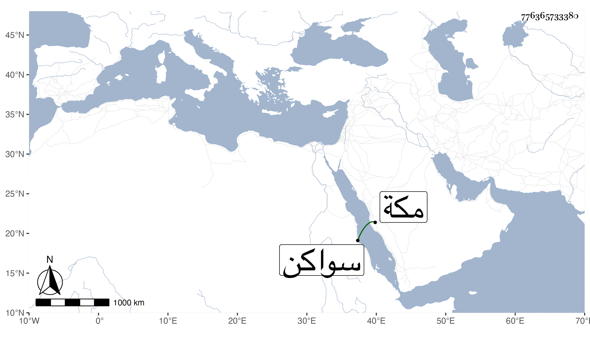

0902Sakhawi.DawLamic.ITO20230111-ara1.EIS1600.776365733380
Biography ID: 776365733380
214
محمد الجمال بن العفيف أخو الذي قبله . ولد في صفر سنة خمس وتسعين وسبعمائة بمكة وسمع بها من البرهان بن صديق صحيح البخاري بفوت وأجاز له جماعة كابن أبي البقاء وابن الناصح والكمال الدميري والعراقي والهيثمي ، ودخل في التجارة لليمن وجزيرة سواكن . ومات بها في العشر الأول من صفر سنة إحدى وأربعين ، ذكره النجم عمر بن فهد في معجمه وذيله .
